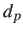
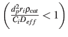

Next: Kinetic Model Development Up: Results and Discussion Previous: Proposed Reaction Pathways
Before conducting the kinetic measurements, using well known procedures,
the plug flow condition was confirmed by satisfying the criteria proposed previously [#!Perego1999!#].
Specifically, the reactor diameter is more than 10 times the catalyst particle diameter,
while the catalyst bed height is more than 50 times the catalyst particle diameter.
The absence of internal/external mass transfer limitations was also confirmed (Figure 2).
By varying only packed catalyst particle diameter () in the range 100 micron 1000 micron,
Figure 2(a) was obtained.
It shows that when 150 micron (corresponding to 100 mesh), internal mass transfer effect was negligible.
Figure 2(b) was obtained by varying feed flow rate, while keeping other operating conditions, including contact time (W/F), unchanged.
It indicates that for feed flow rate  
Yang Xiao 2017-12-05